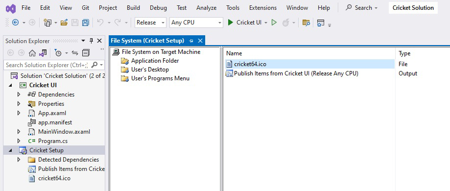

Creating Solution and Avalonia App
Creating Publish Profile
It is VERY important to build the project in release mode and publish project before creating setup project.
Without publish profile successful build process, setup will not work properly.
Creating Setup project
-
Make sure you have installed Microsoft Visual Studio Installer Projects 2022 extension in Visual Studio 2022
- 
Trouble shooting
In case setup is not building properly, make sure following points.
- Before adding setup project in solution, the main project must be built and published in release mode.
- Publish profile must be selected in setup project output properties.
- Setup TargetPlatform must be same as Target Runtime setting in publish profile.